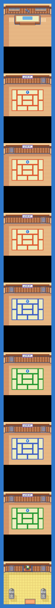
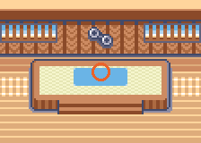

PokémonEMMA'S EMERALD
OFFICIAL Strategy Guide
Petalburg City Gym
TIP
No wild Pokémon in the grass here. Time of day: M = morning (6–10), D = day (10–19), E = evening (19–20), N = night (20–6).
Event 1: Gym Battle: DAD

Four badges in hand, DAD finally fights you for the fifth. Each door in the gym is a trainer with a themed gimmick. DAD's team is Normal-flavoured but built around his Corviknight, with Ludicolo, Haunter, Primeape and Phanpy. Reward: Balance Badge and a proud father.
CAUTION
Cap is 31. Corviknight resists most things; Electric and Fire moves break it. Fighting moves handle the rest.Battle
| Leader DAD Normal  Lombre LV28 WaterGrass  Haunter LV29 GhostPoison  Primeape LV29 Fighting  Corviknight LV30 Steel Hard Lombre LV29 WaterGrass Eviolite Haunter LV29 GhostPoison Eviolite  Phanpy LV29 Ground Eviolite Primeape LV30 Fighting Sitrus Berry Corviknight LV31 Steel Sitrus Berry Easy Lombre LV25 WaterGrass Haunter LV26 GhostPoison Primeape LV26 Fighting Corviknight LV27 Steel |
Event 2: Surf
Wally's father meets you outside and hands over HM Surf. The Field Case already lets you Surf as soon as this badge is yours, so the sea routes are open either way.
Trainers
| ACooltrainer MARY: Delcatty LV26Normal |
| BCooltrainer RANDALL: Swellow LV26Normal |
| CCooltrainer PARKER: Spinda LV26Normal |
| DCooltrainer ALEXIA: Wigglytuff LV26 |
| ECooltrainer GEORGE: Slakoth LV26Normal (Sitrus Berry) |
| FCooltrainer JODY: Zangoose LV26Normal |
| GCooltrainer BERKE: Vigoroth LV26Normal |
100